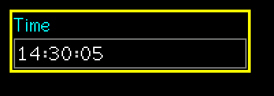
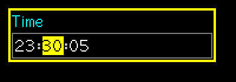

SuperTimeBox
A time of day made of numeric fields. Scrolling changes a whole field, like a spin box.
Editable (modal edit)src/SuperTimeBox.h
What it looks like


Real renders from the library (headless, dark theme, Font2, shown at 2x).
Quick start
SuperTimeBox tm(&lcd, 10, 10, 130, &lgfx::fonts::Font2, &Enc, &BtnA, &BtnB /*, seconds=true*/);
tm.SetTime(14, 30, 0);
tm.SetOnAccept([](void*){ /* tm.GetValue() == "14:30:00" */ });Unique features
- Always 24 hour. HH 0-23, MM 0-59, SS 0-59, each field kept in its range;
SetWrap(true)makes a field go round (59 to 00). - Constructor flag
seconds=falsegivesHH:MM. GetValue()is"HH:MM:SS";GetSeconds()is seconds since midnight.- Built on
SuperFieldBox: fixed-width digits and separators drawn inColLiteral.
GUI workflow
Encoder changes the current field by whole units. A short = next field (after the last, back to the first); A long = accept; B short = cancel; B long = revert and keep editing.
Touch a field to select it, drag up/down to change it, lift to accept. Touching a separator does nothing; tap outside cancels.
Event workflow
edit contract. OnChange on every field change; OnAccept once. Stored time changes only on accept.
Main API
| Call | What it does |
|---|---|
SetTime(h,m,s) | Returns false when out of range |
GetHour/GetMinute/GetSecond | Fields |
GetSeconds() | Since midnight |
GetValue()/SetValue("HH:MM:SS") | String form |
SetWrap(b) | Fields wrap round |
Pitfalls
Watch outThere is no AM/PM by design.